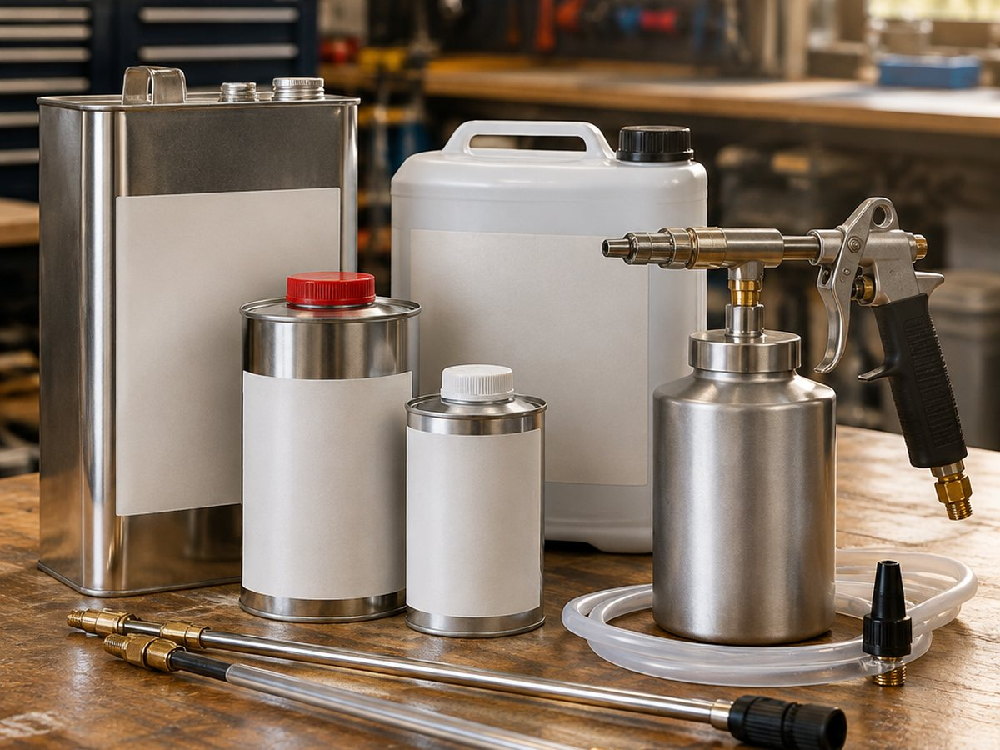

Dinitrol — профессиональная линейка для антикоррозийной защиты: разные составы под разные зоны, потому что днище и внутренняя полость требуют разного.

Мойка днища и арок, сушка. Состав наносится только на чистый металл, иначе смысла в обработке нет.
Наносим материал для открытых поверхностей: он держит удары камней и не пропускает влагу.
Распыление туманом через технологические отверстия — состав распределяется по всей полости и остаётся эластичным.
Смотрим покрытие по зонам, фиксируем на фото и только потом собираем автомобиль.
Опишите авто и что беспокоит — подскажу, какие зоны обрабатывать в первую очередь.
Приезжайте на осмотр или позвоните: скажу, что нужно вашему авто и сколько это стоит. Комплекс для легковых — от 500 руб.